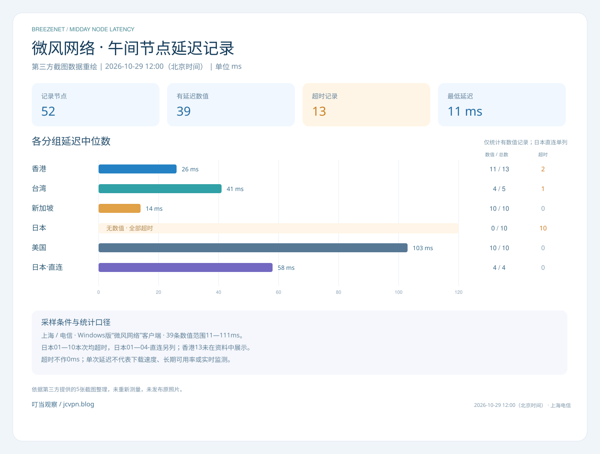

关注大流量与性价比
把流量需求与付费周期一起考虑，按每月使用量或一次性总额度选择适合的方案。
从使用量、节点IP需求和视频场景出发，了解微风网络的服务定位。
把流量需求与付费周期一起考虑，按每月使用量或一次性总额度选择适合的方案。
根据站长补充，微风提供原生IP节点选择，面向关注节点IP属性的用户。选择时可结合目标地区、平台要求和具体节点的使用表现进行判断。
面向较高清晰度视频使用场景，结合目标平台、节点和实际播放表现判断连接体验。
2026-10-29 12:00（北京时间） · 上海电信 · 第三方延迟记录
39条数值参与延迟统计，13条超时单独保留，不记成0ms。日本01—10本次均超时，名称带“直连”的日本01—04另组展示；香港13未出现在资料中，不补节点或数值。
每个节点仅一条记录，本图是第三方延迟快照，不代表下载速度、长期可用率或实时监测。
超时
超时
26ms
29ms
28ms
26ms
25ms
26ms
26ms
28ms
28ms
27ms
25ms
38ms
超时
41ms
42ms
41ms
12ms
12ms
14ms
14ms
17ms
11ms
17ms
13ms
14ms
15ms
超时
超时
超时
超时
超时
超时
超时
超时
超时
超时
95ms
111ms
103ms
103ms
103ms
105ms
99ms
103ms
96ms
95ms
57ms
64ms
58ms
58ms
共52条记录

先选付费方式，再看每月额度或一次性总量。以下保留套餐原价，已确认的券后价格另行注明。
资料来源：第三方提供的2张套餐截图，经站长转交整理 · 整理日期：2026-10-29
全部套餐 · 共6款
年付一次，每月按额度使用
年付折算约11.42元/月，实际年付137元；优惠码weifeng90九折后¥123.30/年
购买日起按月自动重置100GB额度
适合预计持续使用、每月流量需求较低的读者。137元是全年支付金额，100GB是每月额度，选择时应分别核对付费周期与流量周期。
前往查看套餐月付入门，按月安排使用
按月支付，按月提供对应额度
每月提供200GB，具体刷新日期以后台为准
每月25元、200GB额度。适合希望按月付费、每月用量在该额度内的读者；可先记录实际消耗，再决定后续是否需要更大的流量档位。
前往查看套餐增加流量空间，保留月付节奏
按月支付，按月提供对应额度
每月提供500GB，具体刷新日期以后台为准
每月55元、500GB额度。适合月度需求高于200GB、希望为较频繁使用留出额度的读者；是否合适应结合自己的实际流量记录判断。
前往查看套餐较大月度额度，按实际需求选择
按月支付，按月提供对应额度
每月提供1200GB，具体刷新日期以后台为准
每月125元、1,200GB额度，截图同时写作1.2TB。适合已有较大月度流量需求的读者；高额度不代表固定带宽或单用户测速保证。
前往查看套餐按总量使用，适合低频或备用
一次购买，按总额度逐步消耗
270GB一次性总额度，不限时，流量用完为止
一次支付200元，获得270GB总流量。资料标注流量不过期、用完为止；这里的270GB是整包额度，不是每月恢复的月流量。
前往查看套餐较大备用额度，按总量逐步消耗
一次购买，按总额度逐步消耗
570GB一次性总额度，不限时，流量用完为止
一次支付370元，获得570GB总流量。适合希望准备较大一次性额度的读者；按实际消耗扣减，不应当作每月新增570GB理解。
前往查看套餐相同的GB数字，可能分别代表每月额度或整包总量。
| 套餐 | 资料价格 | 流量口径 | 刷新或使用规则 |
|---|---|---|---|
| 清风 | ¥137 / 年 | 100GB 每月流量额度 | 购买日起按月自动重置100GB额度 |
| 乘风 | ¥25 / 月 | 200GB 每月流量额度 | 每月提供200GB，具体刷新日期以后台为准 |
| 破风 | ¥55 / 月 | 500GB 每月流量额度 | 每月提供500GB，具体刷新日期以后台为准 |
| 御风 | ¥125 / 月 | 1,200GB 每月流量额度 | 每月提供1200GB，具体刷新日期以后台为准 |
| 信风·不限时 | ¥200 / 一次性 | 270GB 一次性总流量 | 270GB一次性总额度，不限时，流量用完为止 |
| 长风·不限时 | ¥370 / 一次性 | 570GB 一次性总流量 | 570GB一次性总额度，不限时，流量用完为止 |
截图还出现按季、按半年等筛选项，但未提供对应报价。本页不据此补算未展示周期的售价；具体在售周期与金额以微风结算页为准。
以下是根据套餐额度整理的选择思路，不是速度排名。
可先看清风：137元年付、每月100GB。适合能接受年付周期，并预计自己的月度消耗在该额度内的情况。
了解清风年付 →乘风、破风、御风分别提供每月200GB、500GB和1,200GB。先看自己已有的用量记录，再决定是否需要增加额度。
查看月付方案 →信风270GB和长风570GB按一次性总量消耗，资料写明不限时、用完为止。需要区分总额度与每月自动刷新的额度。
了解一次性流量 →流量额度不直接等于观看时长或下载速度；具体消耗受应用任务、清晰度、同步和后台流量等因素影响，可结合实际用量记录判断。
Windows、macOS与Android使用微风网络客户端；iOS使用Nextin。
这三个系统均使用“微风网络”客户端，直接使用微风官网账号登录。
打开Nextin应用，先填写品牌识别码 wfwl，再使用微风官网账号登录。登录成功后选择节点，点击“连接”。
Windows版客户端名称为“微风网络”，使用微风官网账号登录。
在微风官网首页找到Windows版“微风网络”客户端下载入口，下载并打开客户端。
访问微风入口 ↗直接使用微风官网账号登录客户端。
登录成功后，先选择节点，再点击“连接”。
下载入口与使用流程由博客站长于2026-10-29确认。
对照流量重置、套餐升级、提前续费与技术问题退款的处理方式。
重置包与所购套餐同价，购买后立即恢复该套餐的完整流量。
费用：先支付新套餐全额，再由平台退回差价。
有效期：升级成功当天作为新套餐起算日，重新计算所选周期的有效期。
流量：新套餐额度扣除本周期已用流量，剩余额度继续使用。
提前续费只延长套餐有效期；流量仍按原定日期刷新，不会因提前续费而立即恢复。
在技术问题经客服协助后仍完全无法使用的情况下，可通过微风官网内的客服入口申请全额退款。
申请期限尚未确认，申请前请向客服核对。
流量与售后规则由博客站长于2026-10-29确认。
售后咨询和符合条件的退款申请，均通过微风官网内的客服入口联系。
付款周期、流量周期与套餐表述，分别说明。
清风137元/年、乘风25元/月、破风55元/月、御风125元/月；信风·不限时为200元一次性、270GB总流量，长风·不限时为370元一次性、570GB总流量。价格来自本次第三方套餐资料，实际在售及结算金额以微风后台为准。
是每月100GB。截图写明年付价格137元、每月流量100GB，并注明从购买日起自动重置。年付是付款周期，月流量是额度周期，两者需要分开理解。
11.42元是137元除以12后得到的月均成本，便于比较；这份资料给出的实际支付方式是年付137元，不是11.42元的月付报价。
已提供的月付价格及额度分别为：乘风25元、200GB；破风55元、500GB；御风125元、1,200GB。三款均在截图中标注全IPLC专线、不限设备同时接入及不限速；没有据此推断不同档位的实测速率或优先级。
它们是一次性总额度：信风270GB、长风570GB，使用时按实际消耗扣减。截图写明不限时、用完为止，不能将其理解为每月新增或重置同样的流量。
按这批套餐资料，信风和长风没有固定的流量使用期限，额度消耗完即用完。这个表述说明流量包的有效期口径，不额外承诺服务本身会永久持续；具体服务条款以购买时页面为准。
本次两张第三方截图中的6款套餐均标注“全IPLC专线”。本页按原资料保留IPLC线路表述，没有将其他品牌的线路类型套用到微风，也不把线路名称当作实测速率证明。
本次6款套餐的详情均写明“不限制设备同时接入”。该资料没有进一步提供账号共享、转售或其他使用条款，不将不限设备数扩写成允许任意共享账号。
不能。“不限速”是原套餐的速率政策表述；实际连接体验仍需在具体设备、网络、节点和时段下验证。流量额度、线路类型与单次下载速度属于不同信息。
截图顶部虽出现按季、按半年等筛选项，但本次没有提供这些周期对应的套餐报价。本页只展示清晰可读的年付、月付与一次性价格，不用月付金额直接推算其他周期的实际售价。
本页新增一批第三方截图记录：用户说明采样时间为2026-10-29 12:00（北京时间），上海电信，Windows版“微风网络”客户端。共52个节点，39条数值、13条超时；图表依据截图重绘，本站没有重新测量。
截图中的日本01—10本次均为超时；名称明确带“直连”的日本01—04显示57、64、58、58ms。本页将两组分开，不把直连记录用来代替前10个节点，也不凭截图推断具体网络故障原因。
这批资料展示香港01—12及香港14，没有展示香港13。本页只记录可见节点；未展示不等于已确认超时、下线或不存在。
不能直接换算。ms是这次客户端显示的延迟单位，下载或上传速度需要另行测量。每节点只有一条记录，也不能据此计算全天可用率或持续稳定性。
清风是年付套餐，原价137元/年，每月100GB。使用优惠码weifeng90九折后，按该原价计算为123.30元/年；除以12折算约10.28元/月。这是年付月均成本，实际按年支付，不是同价的月付套餐。
本页优惠码为weifeng90，优惠力度为九折。清风套餐的适用情况已由站长确认；在微风后台购买时填写优惠码，核对结算金额后再支付。其他套餐适用范围尚未确认。有效期以购买时的活动规则为准。
根据博客站长于2026-10-29补充的资料，微风提供原生IP节点选择，面向关注IP属性的用户。本站尚未逐节点核验，不将原生IP扩写为独享IP、住宅IP或特定平台永久可用。
在微风官网首页直接下载Windows版“微风网络”客户端。打开后使用微风官网账号登录，选择节点，再点击“连接”。该流程由博客站长于2026-10-29确认。
Windows、macOS与Android使用“微风网络”客户端，直接使用微风官网账号登录；iOS使用Nextin应用。客户端名称与登录方式由博客站长确认。
打开Nextin应用，先填写品牌识别码wfwl，再使用微风官网账号登录。登录成功后选择节点，点击“连接”。wfwl是客户端品牌识别码；套餐优惠码为weifeng90。该流程由博客站长确认。
周期套餐的月流量用完后，支持购买流量重置包，也支持升级套餐。可以根据当前流量需求，在后台选择相应处理方式。
流量重置包与所购套餐同价；购买后立即恢复该套餐的完整流量。该规则由博客站长于2026-10-29确认。
先支付新套餐全额，再由平台退回差价。升级成功当天作为新套餐起算日，重新计算所选周期的有效期。新套餐额度扣除本周期已用流量，剩余额度继续使用。该规则由博客站长于2026-10-29确认。
不会。提前续费只延长套餐有效期；流量仍按原定日期刷新，不会因提前续费而立即恢复。需要立即恢复完整流量时，可选择流量重置包。
支持。在技术问题经客服协助后仍完全无法使用的情况下，可通过微风官网内的客服入口申请全额退款。申请期限尚未确认，申请前请向客服核对。该规则由博客站长确认。
售后咨询和符合条件的退款申请，均通过微风官网内的客服入口联系。进入微风官网后，找到站内客服入口沟通。
品牌定位由博客站长于2026-10-29补充；套餐和延迟记录按各自第三方资料整理，分别注明来源。
站长于2026-10-29转交2张第三方截图，本页据其可见内容整理6款套餐价格、流量、IPLC线路及同时接入规则，未放入原照片。截图拍摄时间和提供者名称未单独提供。
叮当观察负责文字编排、套餐对比与选择说明，未登录后台独立核价。实际在售、续费及服务条款以购买时页面为准；“不限速”不作为固定带宽或实测速度保证。
套餐与延迟记录按各自资料来源分别整理；优惠码由站长补充，结算金额以后台为准；各系统客户端名称、账号登录方式及Windows与iOS使用流程由站长确认；其他操作细节和售后规则以微风后台现行说明为准。外部入口保留站长提供的推广参数，访问会打开新窗口。